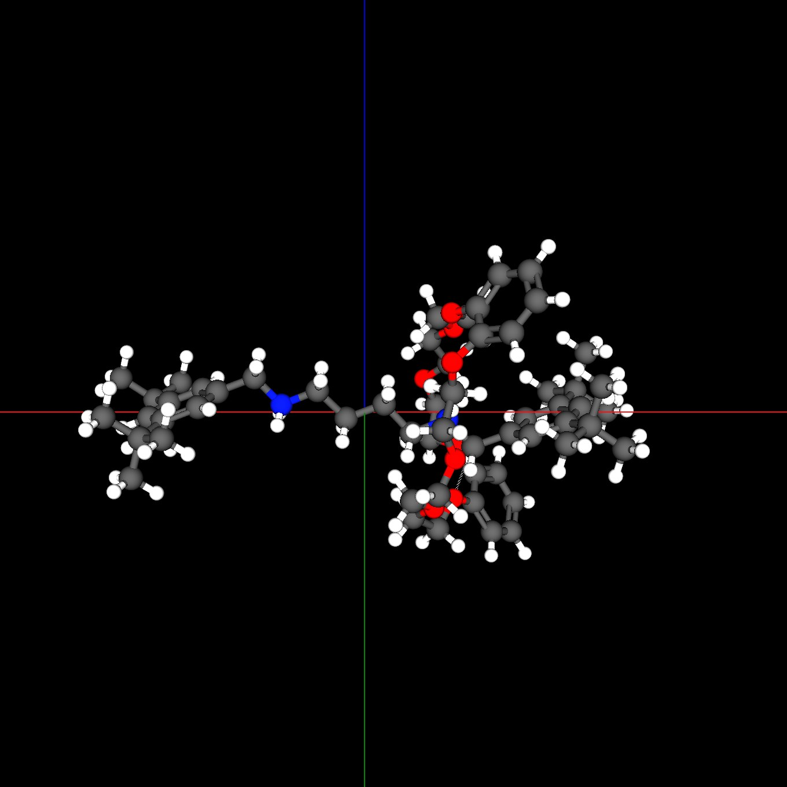
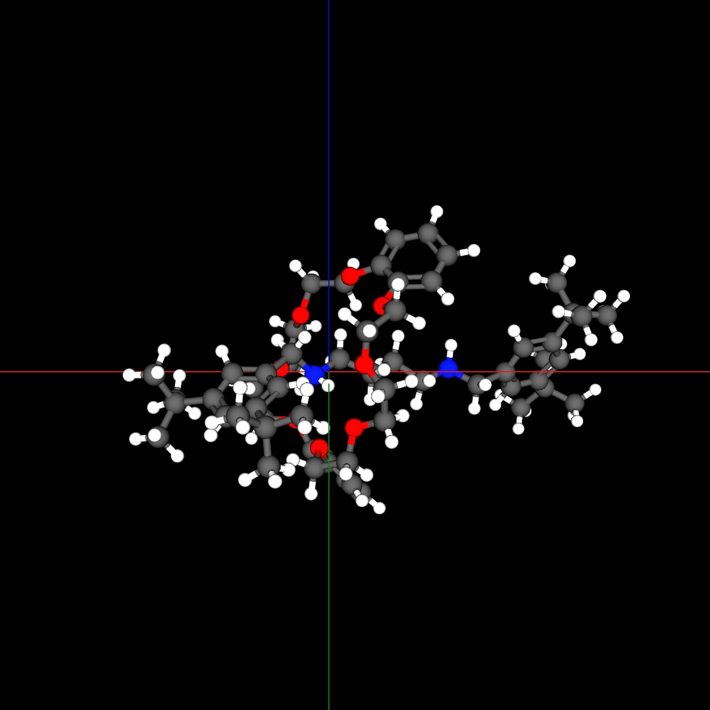
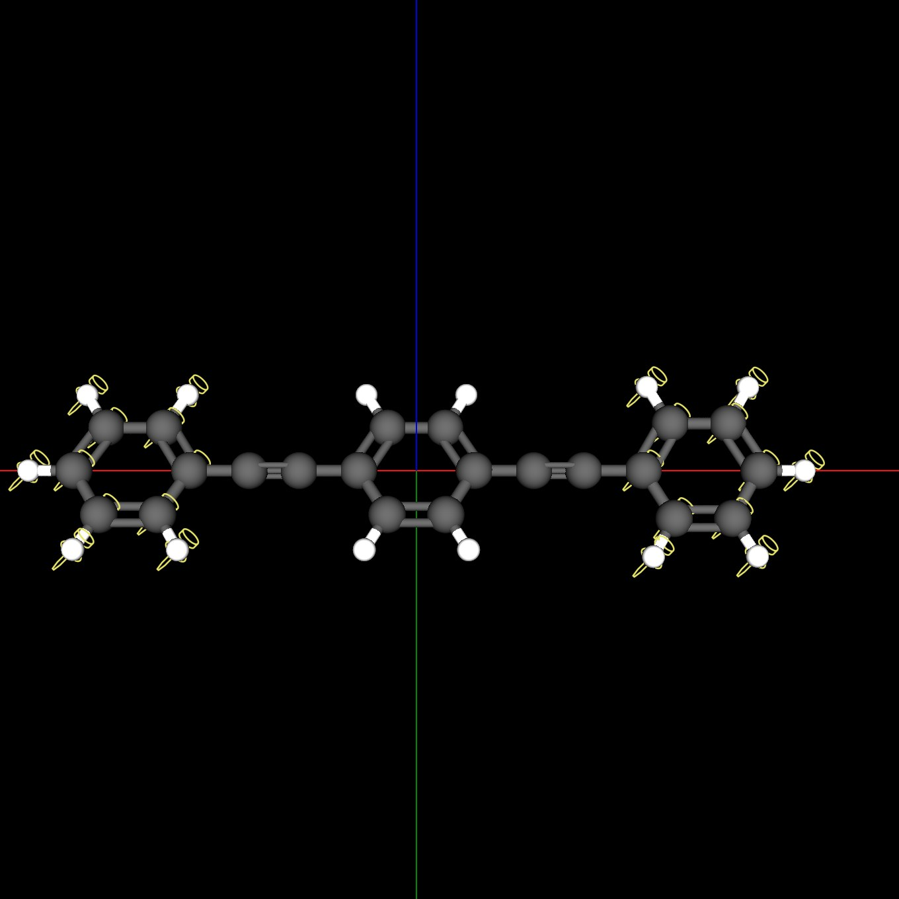

Molecular Machines: A Shuttle, a Rotaxane, a Rotor, and a Bearing
AIMS moves a ring between two stations on an axle, pulls a ring against the stoppers of a rotaxane, turns a ring on an axle, and slides one nanotube inside another, and an AI agent measures each motion.
A machine has parts that move in a controlled way. A molecular machine is a machine whose parts are single molecules: a ring that moves along an axle, a wheel that turns on a shaft, a tube that slides inside another tube. AIMS models every atom of such a part, and an AI agent sets up the experiments. A student asks a plain-language question, and the agent builds the molecules, runs them, measures the motion, and posts the measured data in the chat. This article follows four parts: a shuttle, in which a ring moves between two positions on an axle; a rotaxane, in which stoppers keep the ring on the axle; a rotor, a ring that turns between two fixed rings; and a bearing made of two carbon nanotubes. In the window below, a ring sits at the right end of an axle at 300 K. Press Play and watch the ring move to the left.
A ring on an axle with two nitrogen atoms (blue). The left nitrogen carries a charge, and the ring starts around the right nitrogen. The ring reaches the left nitrogen within a few picoseconds of Play.
What Is a Molecular Machine?
Living cells are full of molecular machines. A kinesin protein walks along a filament and carries cargo, and ATP synthase has a rotor that turns inside a stator. Chemists began to build machines of their own in the 1980s and 1990s. In 1991 Anelli, Spencer, and Stoddart made a rotaxane whose ring moves back and forth between two identical positions on its axle and named it a molecular shuttle. In 1994 Bissell, Córdova, Kaifer, and Stoddart made a shuttle with two different positions and switched the ring from one to the other with an acid. In 1999 Koumura, Feringa, and coworkers made a molecule that turns in one direction when light shines on it. Jean-Pierre Sauvage, Fraser Stoddart, and Ben Feringa shared the 2016 Nobel Prize in Chemistry for the design and synthesis of molecular machines.
Three ideas appear in every example below. A position on an axle where a ring is held is called a station. A signal is a change that a chemist makes from outside, such as adding an acid, and a switch is a machine that takes one of two states according to the signal. A bearing is a part that holds a second part in line and lets it slide or turn. The companion article on supramolecular chemistry shows how a ring comes to sit at a charged nitrogen atom of an axle, and this article starts from that result.
The Forces in the Model
No covalent bond joins the moving part of a molecular machine to the rest. Two forces act between the parts in this lab. The first is the electrostatic force of Coulomb's law between the partial charges of the atoms, which the lab assigns with the method of Gasteiger and Marsili. The second is the Lennard-Jones force, with the atom sizes of the Universal Force Field: a weak attraction between atoms a few ångströms apart and a strong repulsion between atoms that overlap. The ring in the first two examples is the crown ether dibenzo-24-crown-8, a circle of 24 atoms with eight oxygen atoms, and each oxygen atom carries −0.38 e. A nitrogen atom with two hydrogen atoms and a charge of +1 e attracts those oxygen atoms. The nanotubes of the third example have no charges, and the Lennard-Jones force is the one force between them. Every example runs in a vacuum.
Running Experiments by Asking
AIMS is an AI-native environment. Building the molecules, running them, pulling on them, and plotting the results are the agent's work. A student asks the agent to "move the extra hydrogen to the other nitrogen and run it again", and the agent recognizes the intent, configures the lab, runs the experiment, and posts the results in the conversation.
Go to AIMS and open the list of examples, with the lightbulb button on the toolbar or the Examples item in the main menu (☰). Open A Molecular Shuttle from the list (Nanotechnology, Molecular Machines), open the chat, and type the prompts below. The answer to the second prompt in the example keeps its last frame: press "Load this state" on its card and the lab shows the ring back at the right nitrogen.
- First crossing — “Run it, and chart the distance from each nitrogen to one oxygen atom of the ring.”
- Switch — “Now move the extra hydrogen from the left nitrogen to the right nitrogen, keep everything else as it is, and run it again.”
- Four states — “What does the ring do when both nitrogens are charged, or neither? Start the ring at the right nitrogen each time.”
The Ring Follows the Charge
The axle of the shuttle has two nitrogen atoms 6.3 Å apart, joined by a chain of four carbon atoms. Each end of the axle carries a stopper: a benzene ring with two tert-butyl groups. The axle has 93 atoms and the ring has 64. Each nitrogen atom is a station. A nitrogen atom that carries one extra hydrogen atom has a charge of +1 e. The lab starts with the extra hydrogen atom on the left nitrogen and the ring around the right nitrogen.
The agent ran the lab and charted the distance from each nitrogen atom to one oxygen atom of the ring. The ring stayed within 3 Å of the right nitrogen for 1.4 ps, moved along the chain, and reached the left nitrogen after 2.1 ps. For the rest of the 11 ps run the center of the ring stayed 0.6 Å from the left nitrogen on average and at most 0.9 Å. The second prompt moves the extra hydrogen atom to the right nitrogen and keeps every other atom in place. The ring moved back to the right nitrogen. The agent repeated the change two more times, and the ring followed the hydrogen atom each time.
| Crossing | Charged nitrogen | Ring left the old station | Ring reached the new station |
|---|---|---|---|
| 1 | left | after 1.4 ps | after 2.1 ps |
| 2 | right | after 1.6 ps | after 1.9 ps |
| 3 | left | after 0.9 ps | after 1.7 ps |
| 4 | right | after 1.1 ps | after 3.3 ps |
Four crossings of the ring at 300 K. Each crossing starts from the last frame of the one before, with the extra hydrogen atom moved to the other nitrogen. The times count from the moment the hydrogen atom is moved.
The position of one hydrogen atom is the signal, and the position of the ring is the state of the switch. In the shuttles made in the laboratory, a base removes the hydrogen atom from a nitrogen and an acid returns it. Ashton and coworkers built such a shuttle in 1998 with the same kind of ring: the ring stays at a charged nitrogen in acid and moves to a second station when a base removes the hydrogen atom. The lab does not model the acid and the base. The agent moves the hydrogen atom by replacing the axle with a version that has the hydrogen atom on the other nitrogen. The two stations of this model are identical nitrogen atoms, and the two stations of the laboratory shuttles are different chemical groups.
The distance between the stations matters. In trial runs with six carbon atoms between the nitrogen atoms, 8.7 Å apart, the ring waited between 3 and 179 ps before it crossed in four runs. The pull of the charged nitrogen falls quickly with distance, and from 8.7 Å the ring has to move part of the way by thermal motion before the charge takes hold of it.
Four Ways to Charge the Axle
The third prompt runs the axle in each of its four states for 30 ps at 300 K, with the ring starting at the right nitrogen, and records where the center of the ring was over the last 15 ps.
| Extra hydrogen atom on | Ring to left nitrogen | Ring to right nitrogen | Position of the ring |
|---|---|---|---|
| Left nitrogen | 0.6 Å | 5.6 Å | left nitrogen, after crossing |
| Right nitrogen | 5.6 Å | 0.5 Å | right nitrogen |
| Both | 4.2 Å | 0.8 Å | right nitrogen |
| Neither | 5.5 Å | 0.4 Å | right nitrogen |
The average distance from the center of the ring to each nitrogen atom. The first row is the first crossing above. The other three rows are 30 ps runs with the ring starting at the right nitrogen.
The ring crossed in one state of the four: the other nitrogen charged and its own nitrogen neutral. With the charge on its own nitrogen the ring stayed. With both nitrogen atoms charged, the two charges pull the ring in opposite directions, and the ring stayed at its own nitrogen, 0.8 Å from it on average. With neither charged, no charge pulls the ring away, and the Lennard-Jones attraction kept the ring within 1.8 Å of the nitrogen for the 30 ps.


The ring around the right nitrogen at the start (left), and the ring around the charged left nitrogen a few picoseconds after Play (right). The axle tumbles in the lab, so the second picture shows it from a different side.
A Rotaxane: Stoppers Keep the Ring On
A rotaxane has a group at each end of its axle that is wider than the hole of the ring. The group is called a stopper. No covalent bond joins the ring to the axle, and chemists call the connection a mechanical bond. The stoppers of the shuttle above kept its ring on the axle through four crossings. The window below tests a stopper directly: it holds the dibenzo-24-crown-8 ring on an axle with one nitrogen atom and a stopper at each end. The axle is dibenzylamine with two tert-butyl groups on each benzene ring. A tert-butyl group is a carbon atom bonded to three methyl groups. The axle has 78 atoms and no charge, so no charge holds the ring, and the shape of the two ends is the one thing that keeps the ring on the axle. The PubChem database has no structure for this axle, and the agent built it from dibenzylamine by replacing two hydrogen atoms on each benzene ring with tert-butyl groups.
A dibenzo-24-crown-8 ring around the nitrogen atom (blue) of an axle with two tert-butyl groups on each benzene ring. The nitrogen atom is fixed in place.
A ring stays on an axle at 300 K with or without stoppers, because the attraction between the ring and the axle is many times the thermal energy. A test of the stoppers therefore needs a pull. Flight mode in AIMS has a tow, which works like optical tweezers: a spring joins the center of the ring to a point that moves at a constant speed, and the spring applies at most about 800 pN. The nitrogen atom of the axle is fixed in place, so the pull moves the ring along the axle.
Open A Rotaxane and Its Stoppers from the list of examples (Nanotechnology, Molecular Machines), press Play, open the chat, and type the prompts below. The pull can also be done by hand: enter flight mode, aim at the ring, and press T. The answer to the first prompt in the example keeps its last frame: press "Load this state" on its card and the lab shows the ring pulled against the stopper.
- Stoppers — “Pull the ring along the axle at 100 m/s and see whether it comes off.”
- Benzene ends — “Replace the axle with plain dibenzylamine, which has no tert-butyl groups, and pull the ring again.”
- Chain ends — “Now try dihexylamine, whose ends are plain chains of carbon atoms, and compare the three axles.”
Pulling the Ring Along Three Axles
The agent pulled the ring toward one end of each of three neutral axles at 100 m/s and recorded the pulling force and the work done by the tow.
| Axle | End of the axle | Largest pulling force | Work done | Ring came off |
|---|---|---|---|---|
| Dihexylamine | chain of six carbon atoms | 400 pN | 1.2 eV | after 10 ps |
| Dibenzylamine | benzene ring | 830 pN | 2.8 eV | after 11 ps |
| Stoppered axle | benzene ring with two tert-butyl groups | 910 pN | 2.0 eV | no, in 40 ps |
The same ring pulled along three neutral axles at 100 m/s. The largest force is an average over 250 fs while the ring was on the axle. The tow applies at most about 800 pN on average, and the ring moves against the spring, so single readings exceed 800 pN.
The ring left the chain of dihexylamine after 10 ps. The largest force was 400 pN, half the limit of the tow, and the tow did 1.2 eV of work. That work pays for the Lennard-Jones attraction between the ring and the chain. On dibenzylamine the force rose to the limit of the tow, and the tow waited at its limit for about 1 ps while the ring passed over the benzene ring. The ring left the axle after 11 ps, and the tow did 2.8 eV of work. A benzene ring is wider than a chain, and the crown ether ring stretches to pass it.
On the stoppered axle the force reached the limit within a few picoseconds, and the tow stayed at its limit for 33 of the 40 ps of the pull. The center of the ring moved at most 2.4 Å from the nitrogen, and the axle stayed inside the ring for the whole pull. The benzene rings of this axle are next to the nitrogen, so the ring met the first tert-butyl groups after about 2 Å and stopped there. The same ring and the same pull gave three results, and the end group of the axle decided each one. On a charged axle, the charged nitrogen alone held the ring against the tow for more than 20 ps in a trial run, so the three axles of this test are neutral.
The bonds of the molecules in this lab cannot break. A real rotaxane loses its ring when a covalent bond of the axle or the ring breaks. Grandbois and coworkers pulled single molecules with an atomic force microscope in 1999 and measured that a covalent bond breaks at a force of about 2 nN, more than twice the limit of the tow.


The ring on the stoppered axle at the start (left), and the Tow Profile card that the agent posted for the pulls without stoppers (right). The orange curves are the pull on dibenzylamine and the blue curves are the pull on dihexylamine. The force falls below zero after the ring leaves the axle, when the ring moves ahead of the spring.
A Rotor on Triple-Bond Axles
A rotor is a part that turns, and the part that holds it is the stator. Chemists build molecular rotors from a flat ring of atoms held between two bulky groups by an axle of carbon–carbon triple bonds. Godinez, Zepeda, and Garcia-Garibay made such molecules in 2002 and called them molecular compasses and gyroscopes: the ring in the middle turns while the frame around it stays in place in the crystal. The electrons around a triple bond have the same distribution on every side of the bond, so a ring that turns about a triple bond meets almost no barrier.
The window below holds 1,4-bis(phenylethynyl)benzene: three benzene rings in a row, joined by two triple bonds. The molecule has 36 atoms and is 19 Å long. The 22 atoms of the two end rings are fixed in place and form the stator, and the lab marks each fixed atom with a pin. The middle ring is the rotor. The lab runs at 300 K with the Langevin thermostat, which gives every atom small random pushes, as the molecules of a surrounding gas would. Press Play and watch the middle ring.
Three benzene rings joined by two triple bonds, seen from above. The end rings are fixed, and the middle ring turns about the line of the triple bonds.
Open A Molecular Rotor from the list of examples (Nanotechnology, Molecular Machines), open the chat, and type the prompts below. The answer to the third prompt in the example keeps its last frame: press "Load this state" on its card and the lab shows p-terphenyl, the molecule with single-bond axles.
- Turning — “Run it for 30 ps and chart the angle between the middle ring and one of the end rings.”
- Temperature — “How does the temperature change the turning? Try 100 K, 300 K and 600 K.”
- Size and axle — “Try a larger ring as the rotor, and try single bonds as the axle.”
The Ring Turns in Both Directions
The agent ran the lab for 30 ps and charted the angle between the middle ring and one end ring. The middle ring covered 4.4 full turns of angle, an average of about 50° per picosecond. It changed direction nine times, and at the end of the run it was 534° from its starting angle. No force drives this rotor. The atoms of the ring exchange energy with the vibrations of the molecule and with the thermostat, and the turning speeds up, slows down, and reverses at random.
A rotor that turns by thermal motion is not a motor. It turns in each direction equally often over a long time, and it does no work. Kelly, Tellitu, and Sestelo tested this in 1997 with a molecule shaped like a ratchet, a toothed wheel with a pawl. The wheel of their molecule turned equally in both directions, as the second law of thermodynamics requires for a molecule at one temperature. A molecular motor needs an energy source, such as light or a chemical reaction, to turn in one direction.
Temperature, Size, and the Axle
One run of one rotor is too random to compare with another. The second prompt runs the molecule 12 times for 10 ps at each of three temperatures, each run with new random starting velocities, and averages the turning rate. A part that turns freely about one axis holds an average kinetic energy of half of kT, so its average turning rate is proportional to the square root of the temperature divided by the moment of inertia.
| Temperature | Average turning rate | Slowest and fastest run | Free rotor, calculated |
|---|---|---|---|
| 100 K | 43° per ps | 21 to 72° per ps | 44° per ps |
| 300 K | 61° per ps | 28 to 119° per ps | 77° per ps |
| 600 K | 78° per ps | 39 to 167° per ps | 108° per ps |
The turning rate of the benzene rotor, averaged over 12 runs of 10 ps at each temperature. The last column is the average rate of a ring of the same moment of inertia with no barrier.
The rotor turned faster at a higher temperature, and at 100 K the measured rate equals the calculated rate. At 300 K and 600 K the measured rate is lower than the calculated rate. The agent takes the rate from averages of the angle over 1 ps, and a fast rotor that reverses within a picosecond is counted short. The runs at one temperature differ by a factor of three or more, so the average needs many runs.
The third prompt changes the rotor and the axle. The agent ran each of four molecules eight times for 10 ps at 300 K with the end rings fixed.
| Rotor | Axle | Moment of inertia | Average turning rate | Angle covered in a run |
|---|---|---|---|---|
| Benzeneone ring | triple bonds | 90 amu Å2 | 69° per ps | 580° |
| Naphthalenetwo fused rings | triple bonds | 650 amu Å2 | 27° per ps | 170° |
| Anthracenethree fused rings | triple bonds | 1,110 amu Å2 | 19° per ps | 180° |
| Benzenein p-terphenyl | single bonds | 90 amu Å2 | 1° per ps | 20° |
Four rotors at 300 K, eight runs of 10 ps each. The moment of inertia is that of the turning ring about the axle.
A larger rotor turns more slowly at the same temperature. The anthracene rotor has 13 times the moment of inertia of the benzene rotor, and it turned at 19° per picosecond against 69°. In p-terphenyl the three benzene rings are joined directly by single bonds, and the middle ring covered 20° in a run: it rocks and does not turn over. The hydrogen atoms of a ring joined directly to its neighbor meet the hydrogen atoms of the neighbor, and the single bond between two rings resists twisting. The single bonds act as a brake. A triple bond holds the rings 2.6 Å farther apart and has no resistance to twisting in this model. In the real molecule the electrons of the three rings interact through the triple bonds and give the rings a small preference for one plane, and the force field of this lab has no such term.


The rotor at the start, with the three rings in one plane (left), and a few picoseconds after Play, with the middle ring a quarter turn from its starting angle (right). The yellow pins mark the fixed atoms of the stator.
A Bearing Made of Two Nanotubes
A multiwall carbon nanotube is a set of nanotubes one inside another. The walls are 3.4 Å apart, the spacing of the layers of graphite, and no chemical bond joins one wall to the next. In 2000 Cumings and Zettl pulled the inner walls of a multiwall nanotube out of the outer walls inside an electron microscope. The inner walls slid back when released, and the nanotube showed no wear after many cycles. Zheng and Jiang calculated in 2002 that an inner tube released in this way oscillates more than a billion times per second. In 2003 Fennimore and coworkers built a motor whose rotor turns on a multiwall nanotube.
The window below holds a (10,10) nanotube of 280 carbon atoms, 16 Å long and 13.6 Å across, with every atom fixed in place, drawn as a wireframe. A (5,5) nanotube of 140 carbon atoms, 6.8 Å across, lies on the same axis and is free to move. The two numbers in the name of a nanotube describe how the sheet of carbon atoms is rolled, and a larger pair of numbers means a wider nanotube. The inner tube starts with its right end 6 Å outside the outer tube. The thermostat of the lab is off, so the total energy stays constant. Press Play and watch the inner tube.
A (5,5) nanotube inside a fixed (10,10) nanotube, drawn as a wireframe. The inner tube passes through the outer tube and returns every 6.7 ps of simulated time.
Open A Nanotube Bearing from the list of examples (Nanotechnology, Molecular Machines), open the chat, and type the prompts below. The answer to the third prompt in the example keeps its last frame: press "Load this state" on its card and the lab continues from 100 ps.
- Oscillation — “Run it for 30 ps and chart the distance from the left end of the outer tube to the left end of the inner tube.”
- Fit — “Which inner tube makes a good bearing? Compare (4,4), (5,5) and (6,6) tubes inside the (10,10) tube.”
- Friction — “Run it for another 70 ps. Do the sliding and the turning slow down?”
The Inner Tube Slides and Turns
The agent ran the lab for 30 ps. The outer tube pulled the inner tube in. The inner tube passed through, came out 6.0 Å at the left end, stopped, and moved back. It turned around eight times in 30 ps. One round trip took 6.7 ps, a frequency of about 150 gigahertz, and the top speed was about 640 m/s. The center of the inner tube stayed within 0.05 Å of the axis.
The inner tube also turned about its axis: 380° in 30 ps, at about 13° per picosecond throughout. The atoms start with random velocities at 300 K, and these gave the inner tube a small spin. The outer wall did not stop the spin. The total energy changed by 0.002 eV during the run. The thermometer of the lab moved between about 130 K and 350 K, because the thermometer counts the kinetic energy of the sliding of the whole tube together with the vibrations of its atoms.
Which Inner Tube Makes a Bearing?
The second prompt compares three inner tubes in the same outer tube. For each one, the agent adds up the Lennard-Jones energy between the two tubes, moves the inner tube along the axis to find the force that pulls it back, turns it and slides it to find the energy barriers, and runs it free for 10 ps from the middle of the outer tube.
| Inner tube | Gap between walls | Force pulling it in | Barrier to turning | Barrier to sliding | Free run |
|---|---|---|---|---|---|
| (4,4) | 4.1 Å | 960 pN | 0.0 meV | 18 meV | stayed inside, 0.3 Å from the axis |
| (5,5) | 3.4 Å | 1,470 pN | 9 meV | 27 meV | stayed inside, on the axis |
| (6,6) | 2.7 Å | pushed out | 47 meV | 335 meV | left the outer tube after 1.9 ps |
Three inner tubes in a (10,10) outer tube. The barriers are energies for the whole inner tube. The thermal energy at 300 K is 26 meV.
The (5,5) tube leaves a gap of 3.4 Å, the distance at which two layers of carbon atoms rest, and the outer tube pulls it in with the largest force, about 1,470 pN. The force is nearly the same at every position while part of the inner tube is outside, because each ångström of the inner tube that leaves removes the same area of contact between the walls. The (4,4) tube is narrower than the space, the force is weaker, and the tube moved 0.3 Å from the axis toward one side of the wall. The (6,6) tube leaves 2.7 Å, the walls overlap, and the outer tube pushed it out in 1.9 ps.
Turning the whole (5,5) tube past the atoms of the outer wall costs 9 meV, and sliding it costs 27 meV. The thermal energy at 300 K is 26 meV, so the thermal motion of the tube is enough to turn it and to slide it. A bearing needs the two properties in the (5,5) row: a wall that holds the shaft on the axis, and small barriers to motion. The forces and energies are rough. The Universal Force Field of this lab gives two carbon atoms an attraction about twice as strong as the attraction fitted to graphite.
After 100 Picoseconds
The third prompt continues the first run to 100 ps. Over the last 30 ps one round trip took 6.7 ps and the inner tube came out 6.1 Å at each end, against 6.7 ps and 6.0 Å over the first 30 ps. The inner tube turned at 16° per picosecond over the last 30 ps, against 13° per picosecond over the first 30 ps, and made 3.9 full turns in the 100 ps. The total energy changed by 0.002 eV. The sliding and the turning lost no measurable energy to friction in 100 ps. The outer tube of this lab is rigid. A real outer wall vibrates and takes energy from the inner tube, so the oscillation of a real nanotube decays.


The (5,5) nanotube with its right end outside the (10,10) nanotube at the start (left), and the same nanotube at the left end a few picoseconds after Play (right).
What the Lab Cannot Show
The covalent bonds of the molecules in this lab do not form or break, and the lab has no light. A motor such as the one of Koumura and Feringa turns because light changes a double bond of the molecule, and the lab cannot model that step. The lab shows the parts of a machine and the forces that hold and move them: a ring that goes to a charge, a stopper that holds a ring against a pull, a ring that turns freely in both directions, and a tube that slides and turns in another tube. AIMS has one more example of a machine part. A Nanocar on Gold (Nanotechnology) holds a molecule with four buckyballs as wheels on a gold surface, after the nanocar of Shirai, Tour, and coworkers.
What the Simulations Produced
The simulations were given the charges and the sizes of the atoms. Everything below came out of them:
- A shuttle — a ring crosses 6.3 Å from a neutral nitrogen to a charged nitrogen in 1.7 to 3.3 ps, four times in a row, each time the charge is moved.
- A switch — of the four ways to charge the axle, the ring crosses in one: the other nitrogen charged and its own neutral.
- A mechanical bond — a pull of up to 800 pN takes the ring off a chain of carbon atoms at 400 pN and off a benzene ring at the limit of the pull, and the ring stays on an axle with tert-butyl stoppers.
- A rotor — a benzene ring on triple-bond axles turns at 43, 61, and 78° per picosecond at 100, 300, and 600 K, in both directions, and a ring on single-bond axles rocks 20° and does not turn over.
- An oscillator — a (5,5) nanotube released 6 Å out of a (10,10) nanotube passes through and returns every 6.7 ps, a frequency of 150 GHz.
- A bearing — the barrier to turning the (5,5) tube is 9 meV, less than the thermal energy of 26 meV, and the tube is still sliding and turning after 100 ps.
- The right fit — the (5,5) tube is pulled in with 1,470 pN, the (4,4) tube with 960 pN, and the (6,6) tube is pushed out.
Conclusion
This article uses a molecular shuttle, a rotaxane, a molecular rotor, and a nanotube bearing to illustrate a new way to learn science: students converse with an AI agent that turns a plain-language question into a molecular dynamics experiment and hands back measured data. The molecular machine, a subject of the 2016 Nobel Prize in Chemistry, becomes something students watch and measure for themselves in a browser: how a ring follows a charge from one station to another, how the stoppers of a rotaxane keep the ring on the axle against a pull, how a ring turns on an axle with thermal motion alone, and how one nanotube slides and turns inside another with almost no friction. By pairing a physically grounded simulation with an AI that can set it up and run it, AIMS turns a student's curiosity into a genuine scientific investigation of the parts that molecular machines are made of.
← Back to AIMS